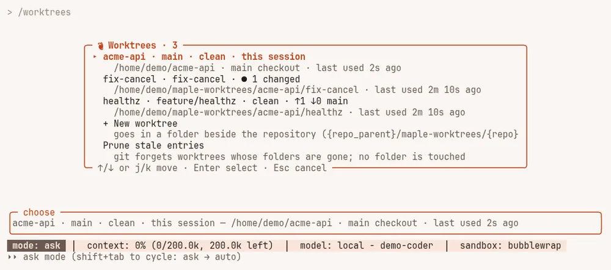
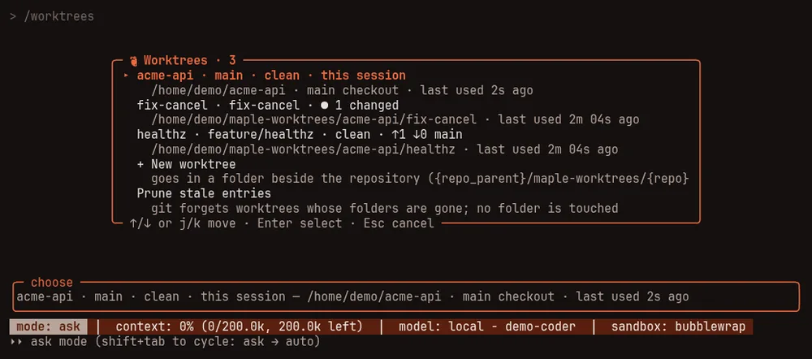
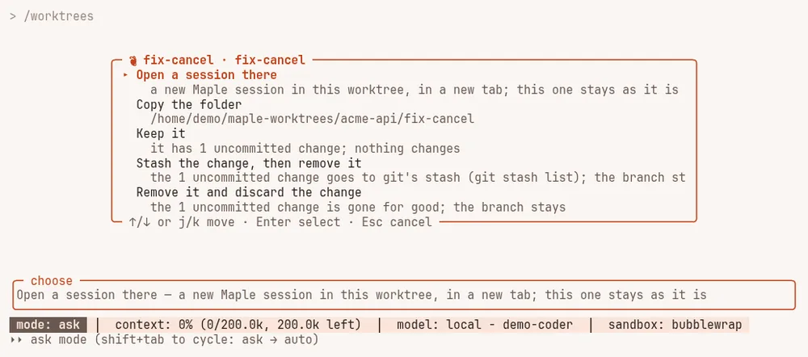
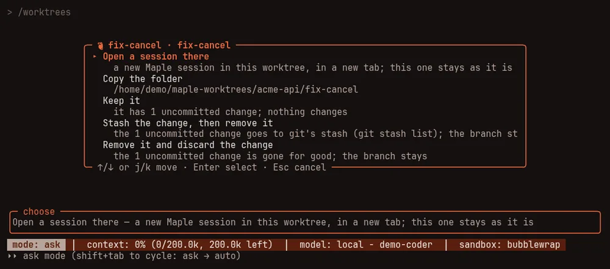
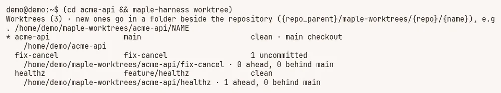
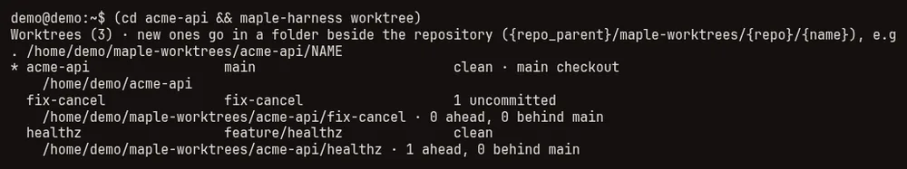
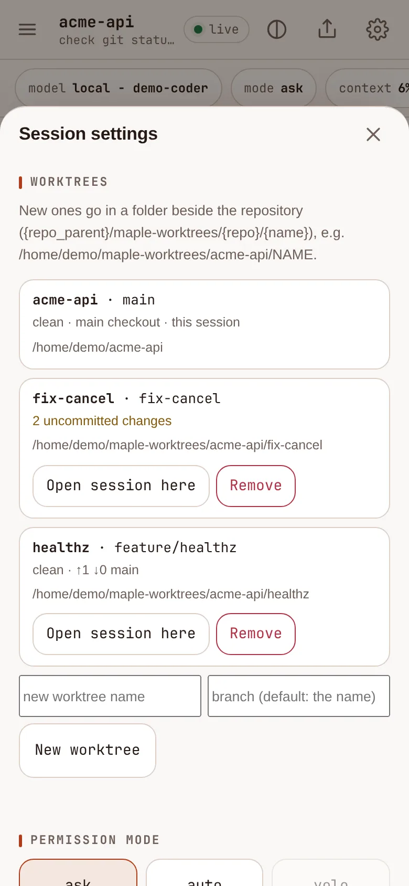
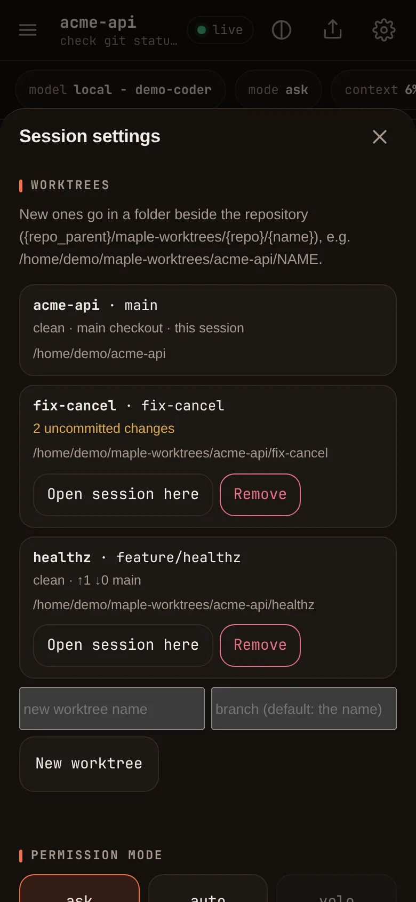

Agents & automationAutomation10 min read
Worktrees #
On this page
A git worktree is a second (or third) checkout of the same repository, on another branch, in a folder of its own. You can work on a fix while a long branch stays as it is, or let an agent work on its own branch beside you. Maple Harness lists your worktrees, makes new ones, opens a session in one, and removes them, from the terminal, the shell and your phone. Every worktree Maple makes goes in the one place you choose, and the agents are kept to it.
In plain words #
- What it is.
/worktreesshows every worktree of the repository: its name, its branch, whether it has uncommitted changes, how far it is ahead of or behind its branch's upstream, who works in it, and when it was last used. From there you open a session in one, copy its folder, remove it, or make a new one. - Where they go. You choose once: beside the repository (the default, as before), inside it in a
.worktreesfolder, in amaple-worktreesfolder beside it, or a folder of your own. Every worktree Maple makes goes there, the ones the agent makes too. - What to do. Nothing, to start: the default keeps them where Maple put them before. To choose another place, open
/settingsand change worktrees.location. - What stays the same. Removing a worktree removes its folder, never its branch. A worktree with uncommitted changes is never removed unless you say what happens to them: stash them, or discard them on purpose.
- What it never does. Maple never removes a worktree it did not put where you said, never removes the main checkout, and never touches a folder git does not list as a worktree.
Choose where worktrees go #
worktrees.location | A worktree named fix of ~/code/shop goes in | Good for |
|---|---|---|
beside (the default) | ~/code/shop-fix | What you had: each worktree a folder beside the repository |
inside | ~/code/shop/.worktrees/fix | Everything about the project in one folder. Git is told to leave .worktrees out (an entry in .git/info/exclude), so nothing shows up in git status and your .gitignore is not changed |
sibling | ~/code/maple-worktrees/shop/fix | A tidy parent folder: every project's worktrees grouped in one maple-worktrees folder |
custom | where worktrees.path says | A place of your own, such as ~/worktrees/{repo}/{name} |
A repository that sits straight in your home folder (such as ~/shop) has nothing beside it but your home folder
itself, so beside makes no worktree for it rather than drop folders loose among your own; the message says so and
names the folders sibling (~/maple-worktrees/shop/fix) and inside (~/shop/.worktrees/fix) would use. Set
worktrees.location to one of them.
How to choose:
- You open each worktree in your editor as its own project, and like seeing them next to the repository: keep beside.
- Your tools (an editor, a file watcher, a test runner) scan the repository's folder and would see the worktrees as
part of it: avoid inside, or tell those tools to skip
.worktrees. - You want one folder per project that you can back up or delete in one go: inside.
- You keep many repositories side by side and do not want worktrees mixed in with them: sibling or custom.
A path of your own #
With location: custom, worktrees.path is a template:
| In the template | Becomes |
|---|---|
{repo} | The repository's folder name (shop) |
{repo_parent} | The folder that holds the repository (~/code) |
{name} | The worktree's name (fix) |
{branch} | Its branch, with a slash made a dash (feature/login becomes feature-login) |
~ | Your home folder |
harness:
worktrees:
location: custom
path: "{repo_parent}/{repo}-worktrees/{name}" # ~/code/shop-worktrees/fixThe path starts with /, ~/ or {repo_parent}. {name} or {branch} goes in its last part only, so all of a
repository's worktrees share one folder. A path that would put worktrees straight in / or your home folder, inside the
repository (use inside for that), or in a folder that holds the repository is refused, and so is any ... A name
or branch can never lead out of that folder: a worktree's name is one folder name (letters, digits, ., _, -).
Only you choose #
worktrees.location and worktrees.path are read from your own config.yaml. A project's own settings file
(.mapleharness/config.yaml) may suggest location: inside, and that applies only when you have not chosen a
location; a project can never set a path, or send worktrees anywhere outside the repository.
Make a worktree #
From the message box:
/worktrees new fix-login a new branch fix-login, from the current commit
/worktrees new fix-login feature/login check out feature/login (made if it does not exist)
/worktrees new hotfix fix/hot --from main a new branch fix/hot, starting from mainThe branch works as in GitHub Desktop: left out, a new branch is named after the worktree; an existing branch is
checked out; a branch that exists only on origin gets a local branch that tracks it. A branch already checked out in
another worktree is refused, with where it is. The repository's git hooks do not run.
/worktree <branch> (one worktree for a branch, in a new tab, with a new session in it) puts it in the same place.
In herdr with the default location, herdr's own worktree helper still makes it, as before; with any other location
Maple makes it where you chose and opens it in a new tab.
The worktrees dialog #
/worktrees opens the list:
Worktrees · 3
▸ shop · main · clean · this session
~/code/shop · main checkout · last used 1m ago
shop-fix · feature/login · ● 2 changed · ↑1 ↓0 main
~/code/shop-fix · used by background agent a3 · last used 20m ago
mine · experiment · clean
~/elsewhere/mine · not Maple's
+ New worktree
Prune stale entries

/worktrees in a repository with two worktrees, one with uncommitted changes. A demo setup with a scripted model.Enter on one offers what fits it:
| Action | What happens |
|---|---|
| Open a session there | A new Maple session in that worktree, in a new tab (herdr, tmux, WezTerm or kitty). This session stays as it is. Without a terminal workspace, Maple says how to start one there yourself |
| Copy the folder | Its folder, to your clipboard |
| Remove it | Asked first. Its folder goes; its branch stays |
| Keep it / Stash the changes, then remove it / Remove it and discard the changes | Offered instead of Remove for a worktree with uncommitted changes. Stashing keeps them in the repository's stash (git stash list, labelled with the worktree's name). Discarding asks once more |
| Prune it | For a worktree whose folder is gone already: git forgets it |
Prune stale entries makes git forget every worktree whose folder is gone (git worktree prune). No folder is
touched.


The same, typed: /worktrees list, /worktrees open <name>, /worktrees rm <name> (with --stash or --force for
uncommitted changes), /worktrees prune.
What is never removed #
- The main checkout.
- A worktree that is not where your setting puts worktrees (made by hand, by another tool, or before you changed the
setting): it is listed as not Maple's, and
git worktree removeis yours to run. - A worktree git has locked (
git worktree lock). - A worktree whose links were changed (its
.gitfile, or git's record of it, no longer agree): it is listed with that, and left for you to check. - The worktree this session works in, one another Maple session works in, and a background agent's own copy while it is in use.
- Anything git does not list as a worktree, even a folder sitting where worktrees go.
From the shell #
maple-harness worktree # the list (--json for scripts)
maple-harness worktree add fix --branch feature/login --from main
maple-harness worktree rm fix # asks first; --yes when there is no terminal
maple-harness worktree rm fix --stash # its uncommitted changes go to git's stash first
maple-harness worktree rm fix --force # its uncommitted changes are discarded
maple-harness worktree prune
maple-harness worktree open fix # a new session in it, here in this terminal
cd "$(maple-harness worktree open fix --path)" # or just go there

maple-harness worktree: the same list from the shell.From your phone #
The session sheet (the gear) lists the repository's worktrees: branch, uncommitted changes, who uses each one, and where new ones go.
- A device that drives sessions has New worktree (a name, and a branch if you want one), Open session here (the new-session sheet, with that folder filled in) and Remove, which takes a second tap. A worktree with uncommitted changes is refused, and the sheet then offers Stash the changes, then remove, Discard (another tap) or Keep it.
- A watch-only device sees the list and cannot change it.
- A device limited to some folders sees none of them: worktrees can be outside its folders.
- A shared link, and a device limited to some sessions, see neither.


The agent and worktrees #
The agent has a worktree tool: it lists the worktrees, makes one, or removes one.
- Listing never asks.
- Making or removing one asks you, in every mode, yolo included, unless your permission rules decide:
worktree(create *)allows it to make worktrees,worktree(remove *)to remove them, and a deny rule refuses. When nobody is there to answer (a run with no terminal, an A2A agent, an approval left unanswered pastharness.approvals.timeout), the call is refused, the refusal is recorded, and the run goes on. - It does not choose the folder. A worktree it makes goes where your setting says. If it asks for another folder
(with the
worktreetool orworktree_open), it is refused, and told where worktrees go. - Starting another agent in a worktree (
agent_start,pane_open) works in a worktree Maple keeps. A folder in a worktree somewhere else is refused, with where worktrees go. - Uncommitted changes stay unless the call says to stash or discard them, and the question you are asked shows which.
While planning, the agent can list worktrees and nothing more.
Agents in their own copy #
A background agent that changes files works in its own copy of the project, a worktree too
(Agents in the background). With the default location its copy stays in the
project's .mapleharness/worktrees folder, as before. With any other location it goes there, named
agent-<id>-…, and the sandbox and the file tools may write in that copy (only that copy, not the folder around it)
for that agent only, until the copy is removed. A background command the agent started there is stopped when its
copy is removed. Its changes still come back only when you agree. The dialog marks these copies as
an agent's copy.
Settings #
| Key | Default | What it does |
|---|---|---|
worktrees. | beside | Where the worktrees Maple makes go: beside, inside, sibling or custom. With any but beside, a background agent's copy goes there too |
worktrees.path | For custom only: the template, such as {repo_parent}/{repo}-worktrees/{name} or ~/worktrees/{repo}/{name} |
Both are in /settings. custom with no path yet loads, so you can set one after the other; until the path is set,
making a worktree says so instead of guessing a place.
Technical details #
- Worktrees are listed, made and removed from the repository's main checkout. A session started inside a linked worktree says so and points you there: what git would read in a worktree is the worktree's own to change, and git runs outside the sandbox.
- Worktrees are made with
git worktree addfrom the main checkout, with the repository's hooks turned off. The folder that holds them must be a plain folder, not a link (and withinside, every folder on the way to it). - Every git command Maple runs names the repository's folders itself, so nothing a worktree (or a contained command)
wrote can point git at other settings. A worktree whose links are not git's own (its
.gitfile, or git's record of it, changed) is listed as such and never acted on. - Removal checks, just before it runs: git lists the worktree, it sits where your setting puts worktrees, its links
are git's own, it is not locked or in use, and its uncommitted changes are what you were shown. Then
git worktree removedoes the work. - A new worktree is made empty, checked to be where it should be, and only then filled with the branch's files. With
inside, where commands in the sandbox can write, the files are written inside the sandbox too. - A repository with git's per-worktree settings on (
extensions.worktreeConfig, whichgit sparse-checkoutturns on): git would read those settings from a place commands in the sandbox can write, so Maple lists the worktrees but does not count their changes, does not make new ones (git does, if you run it yourself), and removes one only when you choose to discard its changes. No background agent's own copy is made either: a background agent then works in the project itself, as withsubagents.isolation: none, and its line in the conversation says why. - git's per-worktree settings file (
.git/config.worktree) is remembered (whether it exists, and a hash of it) in your own config folder, never in the repository. When it changed since a session last saw it, the next session asks you at start; until you say yes, Maple runs no git in worktrees there (a session that cannot ask says so instead). - The list's ahead and behind are counted against the branch's upstream, or, without one, against the main checkout's branch.
maple-harness worktreereads your ownconfig.yaml(--configto choose another).
Not yet checked #
Tested on Linux with real git (2.56) in temporary repositories, the interface in tmux and the phone page in Chromium. macOS, Windows, herdr's own worktree helper and a real phone were not run.